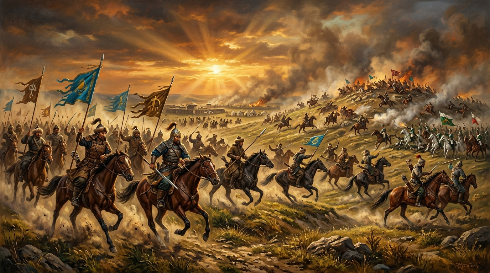
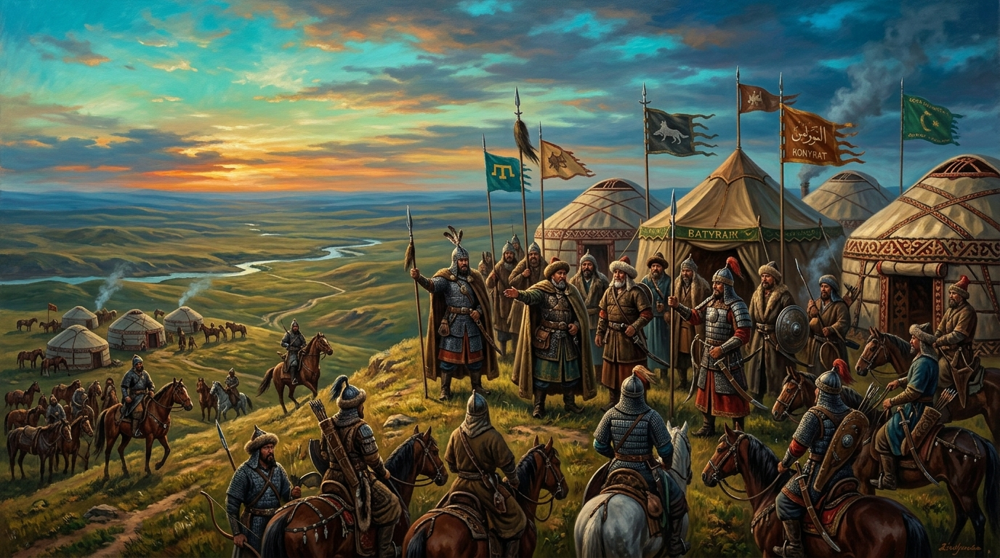
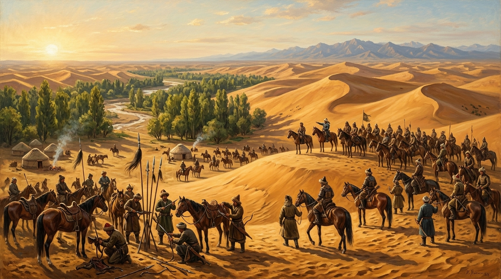
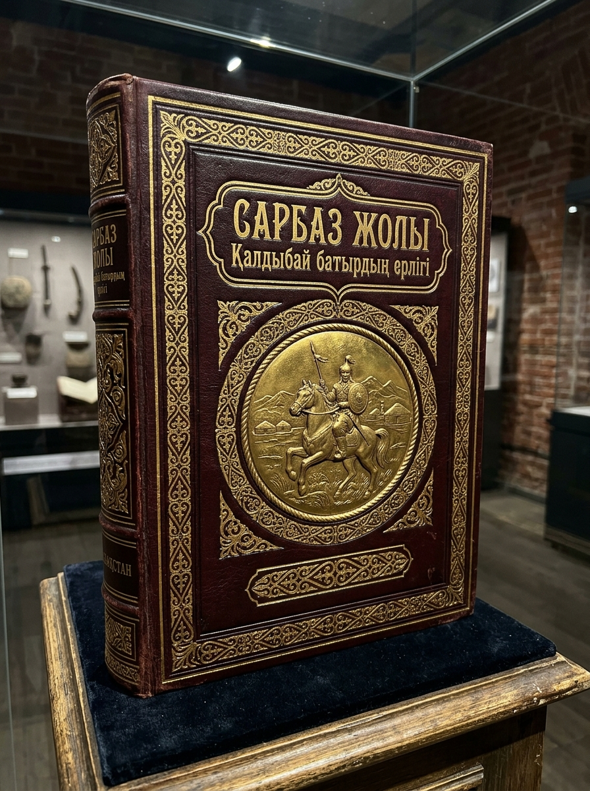

01
Туған жері мен уақыты
1775 жылы Тептер өзені бойындағы ата қонысында дүниеге келген.
1836–1838 жылдары Бөкей Ордасында болған Исатай Тайманұлы мен Махамбет Өтемісұлы бастаған халық-азаттық көтерілісінің белгілі батыры, сарбазбасы және старшын
Мұрағаттық құжаттар мен тарихи зерттеулерде сақталған нақты мәліметтер
1775 жылы Тептер өзені бойындағы ата қонысында дүниеге келген.
12 ата Байұлы бірлестігіне кіретін Ысық руының Қараораз аталығынан тарайды.
Замандастары қайтпас өжеттігіне, жаудан тайсалмайтын көзсіз батырлығына бола «Қызыл көз Қалдыбай» деп атаған.
Көтеріліске ауыл-аймағымен және Қабыланбай, Иманбай, Смағүл, Жапалақ, Қали есімді ұлдарымен бірге қатысқан. Ұлы Қабыланбай Қалдыбайұлы — Исатай мен Махамбеттен кейінгі көтерілісшілер арасындағы беделді басшылардың бірі.
Жәңгір хан мен патша өкіметінің отаршылдығына қарсы шығып, алым-салық төлеуден бас тартқан. Жазалаушыларға қарсы сарбаздарын бастап күрескен.
1837 жылы 15 қарашадағы Тастөбе шайқасынан соң, 22 қарашада Қарақұдық деген жерде жазалаушы отрядпен болған кескілескен шайқаста қаза тапқан.
Тарихи зерттеулер мен көтеріліс шежіресі бойынша арнайы дайындалған бейнебаяндар
Исатай Тайманұлы мен Махамбет Өтемісұлының сенімді серігі, мыңбасы сарбазбасы Қалдыбай Қосаяқұлының батырлық өмір жолы туралы деректі баян.
1837 жылдың 15 қарашасындағы Тастөбе шайқасы мен 22 қарашадағы Қарақұдықтағы жазалаушы отрядпен болған ақтық шайқас тарихы.
Азаттық күресінің өшпес ізі қалған қасиетті қоныстар мен майдан далалары

1837 жылы 15 қарашада болған шешуші Тастөбе шайқасы. Қалдыбай батыр сарбаздарымен соңғы деміне дейін ерлікпен соғысқан.

Көтерілісшілердің отаршылдарға қарсы әскери маневрлары мен тактикалық соққылары ұйымдастырылған тарихи мекен.

Көтерілісші сарбаздар шоғырланған, дайындық жүргізген және күрес рухын көтерген стратегиялық аймақ.
Мұрағаттық құжаттар мен ел аузындағы аңыздар жинақталған құнды туынды

Бұл еңбекте 1836–1838 жылдардағы Исатай Тайманұлы мен Махамбет Өтемісұлы бастаған ұлт-азаттық қозғалыстың басты сарбазбасы болған Қалдыбай Қосаяқұлының өмір жолы, Ысық руы сарбаздарының ерлігі, Тастөбе мен Қарақұдық соғыстарының тың деректері кеңінен баяндалады.
Батырманы басқанда кітап материалдары жаңа қойындыда (Google Drive) ашылады.